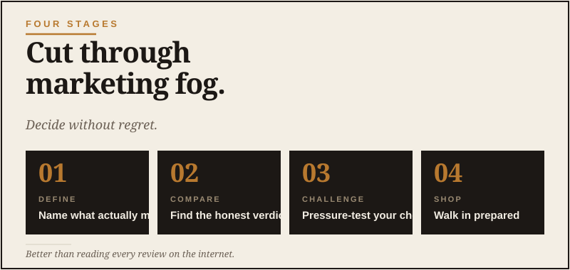

Buy It Right Once
Cut the marketing. Decide without regret.

Every grown man has been here. You’re looking at two trucks, two grills, two lawnmowers, two appliances — anything that costs real money — and you’re trying to figure out which one is actually better, not just which one has the better marketing team. I have spent more hours than I care to admit comparing vehicle parts, cameras, tires, and camp gear. Research can become its own hobby if you’re not careful.
The traditional process goes like this. You read manufacturer websites, which all sound the same. You watch YouTube reviews, half of which are sponsored. You scroll Reddit threads where five people are arguing and four of them are wrong. You ask the guy at the store, who pushes whatever has the best margin. Eventually you make a decision based mostly on which one you happened to be looking at when you got tired of researching.
AI fixes this. Not by making the decision for you — but by being a fast, patient research assistant who can sift through marketing noise and surface the things that actually matter.
Here’s the workflow.
Stage one: define what actually matters to you
The mistake most people make is asking AI which option is best in the abstract. Best for whom? You? Your neighbor? A guy with totally different priorities?
The real first step is getting clear on what you care about. AI can help with this if you’re stuck.
You’ll get back a useful list of considerations — some you’ve thought of, some you haven’t. Use that list to define your real criteria before you start comparing options.
Stage two: get a real comparison, not a marketing summary
Now you’re ready to compare specific options. Here’s the prompt that consistently produces a useful answer:
The “don’t hedge” line matters. AI tools have a built-in tendency to give you a balanced view that doesn’t actually help. Asking for a clear verdict pushes through that.
The follow-up that makes it sharper:
This is gold. It surfaces the long-term ownership realities — the things that come up after the honeymoon period, when you discover the design flaw or the maintenance nightmare or the part that always breaks first. The purchase price is only the cover charge.
Stage three: pressure-test your favorite
Once you’re leaning toward one, do this:
This is the move that has saved me money more than once. AI is good at finding the things you don’t want to hear about your favorite option. Listen to it. You don’t have to act on it. But if it raises a real concern that lands with you, that’s worth paying attention to. Wanting something is not the same as it being the right call. Annoying, but true.
Stage four: prepare to negotiate or shop
For things you can negotiate on — vehicles, big appliances, anything from a dealer — AI can help you go in prepared.
For online purchases, swap that for:
The verification rule
One important note: AI is good for the shape of the comparison, but it can be confidently wrong on specific current facts. Pricing changes. Models change. New versions come out. A 2024 review of a product is now outdated.
For anything where current accuracy matters — exact specs, current prices, latest model year features — verify the AI’s answer against the manufacturer’s current website or a recent review from a trusted source. Use AI to know what to look for, then confirm the specifics.
This is especially true for vehicles, where model-year changes can be significant. If AI tells you about the 2023 model, that doesn’t mean the 2026 model is the same.
The hidden benefit nobody talks about
Here’s what surprised me when I started doing this. The biggest value of using AI for big purchases isn’t the answer it gives you. It’s the conversation it forces you to have with yourself.
By the time you’ve told the AI what you actually care about, what your priorities are, what you want this purchase to do for you — you’ve done more thinking about the decision than you would have otherwise. The AI is just the prompt that makes you do it.
That’s why guys who use AI well for big purchases tend to make better decisions, even on the questions where the AI’s actual recommendation didn’t change their mind. The process clarifies what they wanted in the first place.
The simple workflow
If you want the cheat sheet:
- Get clear on your real priorities (one prompt).
- Compare your top two options with “be honest, don’t hedge” (one prompt).
- Ask what five-year owners would say (one follow-up).
- Pressure-test your favorite (one prompt).
- Verify the specific current details before you buy.
That’s a 20-minute conversation. It’ll produce a better decision than three weekends of YouTube research, and it costs nothing.